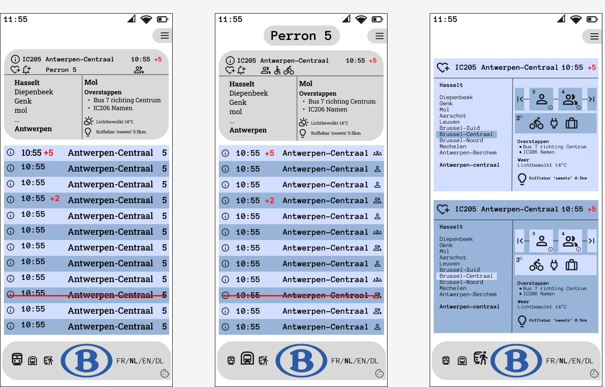

Mobile First Design 📱
De vertaling van de treinschermen naar een mobiele interface.
Overzicht: 3 Mobiele Schermen

Deze weergave toont het overzichtscherm, perronscherm en wagonscherm op mobiel formaat.